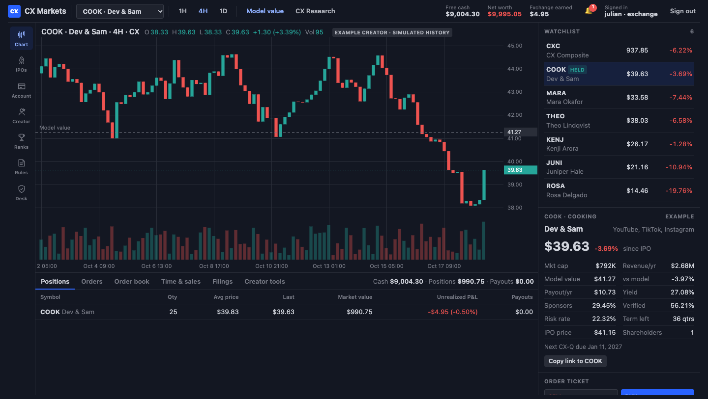

Every creator becomes a company: every platform, every sponsor, one business. Fans and investors buy shares, trade them, and get a dividend from the profit every quarter.
Julian Jung, founder · Investor preview · November 2026
estimated yearly revenue of the median creator in CX Research live
Banks don't lend against views. Selling the channel means losing it. Most creators fund growth out of pocket.
of that revenue comes from sponsors live
Brand deals are lumpy and hard to borrow against, so income swings quarter to quarter.
of a creator's upside their fans can own today
Fans already pay for memberships and merch, but they have no way to share in a creator's success.
Estimates from public YouTube, TikTok and Twitch data for the creators tracked in CX Research. Method: cx/research → Method.
A creator sells, say, 25% of their company and keeps the rest. CX verifies the numbers, takes bids during a roadshow and prices the IPO in an auction.
Shares trade on an order book like any stock. Creators file quarterly earnings (CX-Q) and pay out the share of profit their charter promises (50% to 100%) as a dividend.
A public valuation for every creator, listed or not, refreshed daily. It's how creators find out what they're worth, and how they find CX.
Unlike GigaStar, CX counts all of a creator's revenue: YouTube, TikTok, Instagram, Twitch, sponsors and merch.
| Step | On Wall Street | On CX |
|---|---|---|
| File | S-1 registration, audited financials | CX-1 filing: 12+ months of revenue by source; identity confirmed by a code in the creator's bio; statements uploaded and verified |
| Price range | Bankers' valuation | Model value ±10%: profit times a P/E set by risk (15% plus extra for sponsor-heavy and unverified revenue), plus the business's cash |
| Roadshow | Banks collect orders from funds | Anyone bids inside the range for a few days; bids are private |
| Pricing | Set by bankers, often underpriced | Uniform-price auction: the highest price that sells every share; under 50% demand and the IPO is withdrawn |
| First trade | Opening auction on the exchange | Opening auction: the single price that matches the most shares |
| Lock-up | Insiders can't sell for ~180 days | Half the money raised is held back and released over the first 4 quarterly reports |
| Reporting | 10-Q, 10-K, 8-K | CX-Q every quarter, CX-K compiled automatically, CX-E for big events |

Market size: Goldman Sachs Research, "The creator economy could approach half-a-trillion dollars by 2027". Listing example uses CX's model at a 30% risk rate.
of money raised in each IPO, paid by the creator out of proceeds. The same job an underwriter's spread does, at less than the usual ~7%.
of trade value, paid by the side whose order fills on arrival. Both sides pay in the opening auction.
CX Research as a paid product for brands, agencies and lenders that need to value creators, like CapIQ for the creator economy.
What it costs: securities counsel, a registered partner's fees per offering, revenue verification, and capital for the market maker.
| Company | What it does | Where it stands |
|---|---|---|
| GigaStar | Fans invest in a share of a YouTube channel's AdSense revenue only, under Regulation Crowdfunding | 37 offerings, about $6.9M raised, $1.2M+ paid out (company figures). Secondary trading on an SEC-registered ATS since mid-2026, after a 12-month hold |
| Fantex | Tracking stocks tied to pro athletes' earnings (2013–2016) | IPO demand was weak: it bought 48% of one offering itself, then moved to private placements |
| Catalog buyers & lenders | Upfront cash for licensing a creator's back catalog, or loans against platform payouts | The creator gets cash but fans get nothing, and there's no market |
| CX | Every platform plus sponsors and merch; public research on every creator; standard quarterly filings | Working preview with play money; partner-first path to real offerings |
Why all revenue matters: for the median YouTube creator in CX Research, about 70% of estimated revenue comes from outside YouTube ads, so an AdSense-only product can't price most of what they earn. live
GigaStar figures are company-reported (gigastar.io and its Wefunder updates, 2026). Fantex: Fortune, Law360 (2014–2016).
Every creator gets a public CX Research profile and can check what their channel is worth in 10 seconds. Each profile links to "list on CX".
Pilot with creators making $250K–$2M a year: big enough for a real raise, small enough to want one, with fans who'll show up.
A creator's IPO is content. They announce it to their own audience, and every shareholder has a reason to share.
Play-money exchange, CX Research, the waitlist and creator conversations.
Securities counsel; 3–5 pilot creators raise under Regulation Crowdfunding (up to $5M each per year) through a registered funding portal.
After the 12-month resale hold, shares trade on an ATS run by a partner broker-dealer.
Regulation A for the biggest creators, and CX's own licenses once volume pays for them.
CX's reports (CX-1, CX-Q, CX-K) are designed to map onto the Form C and annual reports a real offering requires.
creators on the waitlist
investors & partners on the waitlist
accounts on CX Markets
trades by real people
Julian Jung · see the live product at the CX home page